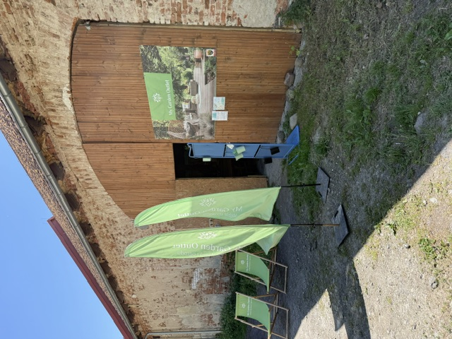
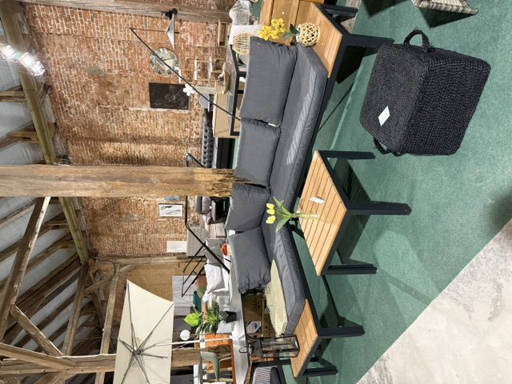

Możesz obejrzeć produkt na żywo
Klient nie kupuje w ciemno. Może usiąść, dotknąć materiału, sprawdzić kolor i zobaczyć rzeczywisty rozmiar.
Outlet mebli pod Wrocławiem
Oglądasz realne produkty dostępne na miejscu: pojedyncze sztuki, końcówki kolekcji i nowe dostawy fotografowane telefonem w naszym outlecie.
Kategorie
Strona działa jak żywy katalog outletowy: klient widzi aktualny podział na wyposażenie domu i ogrodu, status produktu i wie, że warto zadzwonić lub przyjechać.
Nowości w outlecie
Produkty poniżej są przykładowe. Docelowo właściciel dodaje tu własne zdjęcia z telefonu, ceny i dostępność.
Dlaczego outlet
Klient nie kupuje w ciemno. Może usiąść, dotknąć materiału, sprawdzić kolor i zobaczyć rzeczywisty rozmiar.
Katalog ma pokazywać towar tak, jak wygląda naprawdę: w showroomie, magazynie lub podczas świeżej dostawy.
W outlecie często pojawiają się ostatnie egzemplarze, końcówki kolekcji i okazje, których nie ma w regularnej sprzedaży.
Produkty są dostępne lokalnie, więc klient może szybko zadzwonić, zarezerwować i przyjechać obejrzeć wybrany model.
Showroom i magazyn
Home&Garden outlet powinien pokazywać codzienną pracę outletu: świeże dostawy, ekspozycję, produkty ustawione w realnym świetle i zdjęcia wykonywane telefonem. To buduje zaufanie mocniej niż idealne, sztuczne wizualizacje.
Sprawdź dojazd do outletu

Opinie klientów
Świetny sklep, otrzymałem bardzo profesjonalną pomoc w wyborze od pana sprzedawcy. Serdecznie polecam!
Filip Majchrzak tydzień temuOcena klienta z Google.
Tomasz Filip 3 lata temuPolecam.
Agnieszka Polok 2 lata temuSuper miejsce jeśli chcesz kupić rzeczy do domu czy ogrodu w cenie o wiele mniejszej niż rynkowa. Gorąco polecam zajrzeć, a zawsze coś ciekawego się znajdzie.
Concept Customs rok temuMega miejsce. Polecam zajechać i coś sobie wybrać - do domu, do ogrodu itd. Właściciele mega pomocni.
Tomasz Woźny 10 miesięcy temuKupiłem tutaj prawie nowy zestaw mebli ogrodowych, za połowę ceny producenta. Do tego super obsługa która pomogła w wyborze.
Jędrzej Grześkowiak 4 lata temuPolecam. Miejsce pełne perełek. W jednym miejscu znajdziecie tu rzeczy do domu i do ogrodu.
Michalina Pożarowska 2 lata temuŚmiało mogę polecić każdemu, kto planuje zakup mebli ogrodowych w doskonałej jakości za atrakcyjną cenę.
Izabela 4 lata temuSklep polecili mi znajomi i się nie zawiodłem. Duży wybór, świetna jakość mebli i bardzo miła obsługa. Polecam.
Karol Mach 4 lata temuŚwietny sklep, otrzymałem bardzo profesjonalną pomoc w wyborze od pana sprzedawcy. Serdecznie polecam!
Filip Majchrzak tydzień temuSuper miejsce jeśli chcesz kupić rzeczy do domu czy ogrodu w cenie o wiele mniejszej niż rynkowa. Gorąco polecam zajrzeć.
Concept Customs rok temuSklep polecili mi znajomi i się nie zawiodłem. Duży wybór, świetna jakość mebli i bardzo miła obsługa. Polecam.
Karol Mach 4 lata temuKoncepcja panelu
W kolejnym etapie można zrobić panel, w którym właściciel dodaje produkty z telefonu bez znajomości kodu.
Lokalizacja
Telefon: 577 210 777
Poniedziałek: nieczynne
Wtorek: 10:00-16:00
Środa-piątek: 10:00-18:00
Sobota-niedziela: 10:00-14:00